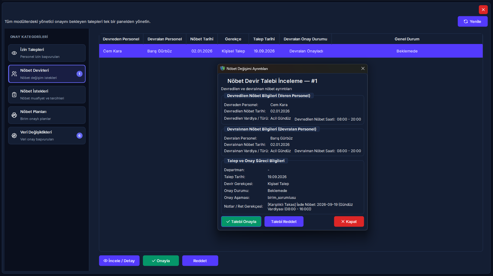

21. Merkezi Onay Bekleyen Görevler Paneli
Tüm klinik ve idari birimlerden gelen personel izinlerini, nöbet takas/devirlerini, aylık nöbet tercihlerini, resmi nöbet çizelgesi yayınlarını ve 4-göz veri değişiklik taleplerini tek merkezden denetleyip karara bağlayın.
Vizyonder Hızlı Karar Reçetesi & Önemli Metrikler
5N1K Kural ve Ayar Çözümleme Tablosu
RADPYS-M21-RULE-MATRIX| NE (İşlem / Alan) | NEDEN (Gerekçe) | NEREDE (Arayüz Yolu) | NASIL (Yöntem) | NE ZAMAN (Zamanlama) | KİM (Rol / Yetki) | DURUM (Sistem Tepkisi) |
|---|---|---|---|---|---|---|
| İzin Onayı / Reddi | Yıllık, şua ve mazeret iznini resmiyete bağlamak | Onay Paneli → İzin Talepleri | Onayla Butonu / Reddet Butonu (Zorunlu Gerekçe) | İzin başlangıcından önce | Birim Amiri / Yönetici | Bakiye anında düşer, portalda bildirim kutusuna düşer |
| Nöbet Devir İnceleme & Onay | Personeller arası nöbet takasını resmi çizelgeye yansıtmak | Onay Paneli → Nöbet Devirleri | İncele / Detay Butonu → Karar Formu | Devralan personelin portal rızasından sonra | Birim / Hizmet Sorumlusu | Çizelgedeki personel adı otomatik güncellenir |
| Nöbet İstek & Mazeret | Personelin aylık tercih ve muafiyetlerini kısıt olarak bağlamak | Onay Paneli → Nöbet İstekleri | Onayla / Reddet Butonu | Solver motoru çalıştırılmadan önce | Başteknisyen / Yönetici | Otomatik çizelge motoruna bağlayıcı kural olarak girer |
| Nöbet Planı Yayınlama | Birim onaylı aylık taslak çizelgeyi resmi yürürlüğe sokmak | Onay Paneli → Nöbet Planları | Yayınla Butonu / Taslağa Geri Gönder Butonu | Ay bitmeden ve nöbet başlamadan önce | İdare / Başhekimlik / Admin | Plan "Yayında" olur, portalda tüm personele açılır |
| Veri Değişiklik Kıyaslama (Diff) | 4-göz ilkesiyle hatalı veya yetkisiz veri girişlerini engellemek | Onay Paneli → Veri Değişiklikleri | İncele ve Karar Ver Butonu (Diff Penceresi) | Kritik profil/evrak/kart kaydedildiğinde | Modül Sorumlusu / Yönetici | Eski-yeni farkı onaylanır, evrak KVKK kasasına aktarılır |
| Sağlık Muayene Teyidi | İşe giriş ve periyodik muayene bulgularını hekimce doğrulamak | Onay Paneli → Veri Değişiklikleri | İncele Butonu → Hekim Doğrulama Formu | Sağlık muayenesi talep kuyruğuna düştüğünde | RKS / İşyeri Hekimi | Hızlı onay engellenir; Dahiliye/Göz/Derm bulguları zorunludur |
Mit Avcısı: Merkezi Onaylarda Yanlış Bilinen Doğrular
ONAY-MYTH-BUSTER"Veri Değişiklikleri tablosunda 'Hızlı Onayla' butonuna basarak tüm talepleri, hekim muayeneleri dahil tek tıkla onaylayabilirim."
Sağlık muayenesi kayıtlarında sistem "Hızlı Onayla"yı güvenlik gereği bloklar ve zorunlu olarak uzman hekim inceleme formunu açar. Dahiliye, göz ve dermatoloji bulguları doğrulanmadan sağlık onayı verilemez.
"İzin veya nöbet devrini reddederken gerekçe yazmak isteğe bağlıdır; boş bırakıp geçebilirim."
Sistem tüm ret eylemlerinde zorunlu olarak metin girişi ister. Ret gerekçesi girilmeden ret işlemi tamamlanamaz ve bu gerekçe personelin web portalındaki bildirim paneline anında iletilir.
"Reddedilen bir talebi onay paneli üzerinden tekrar bulup onaylayabilirim."
Güvenlik ve denetim izi bütünlüğü gereğince bir talep reddedildiğinde işlem kalıcı olarak sonuçlanır ve arşivlenir. Gerekçe düzeltilerek personelin yeni bir başvuru yapması gerekir.
"Bir personelin başlattığı nöbet takası doğrudan amirin onay kuyruğuna düşer."
Nöbet takası karşılıklı rıza gerektirir. Devralacak personel kendi Web Portalı üzerinden "Kabul Ediyorum" onayını vermeden talep yöneticinin onay kuyruğuna düşmez.
Merkezi Onay Mekanizması Süreç Akışı
ONAY-WORKFLOW-DIAGRAM(İzin, Devir, İstek, Profil)"]:::portal --> B["Merkezi Onay Kuyruğu
(Canlı Kategori Rozetleri)"]:::desktop B --> C{"Talep Türü Nedir?"}:::decision C -- "İzin Talebi" --> D["Birim Amiri Teyidi
(Onayla / Zorunlu Ret)"]:::desktop C -- "Nöbet Devri" --> E["Devralan Rızası (Portal)
→ Amir Onay Formu"]:::desktop C -- "Veri Değişikliği (Diff)" --> F["Diff Karşılaştırma
(Kırmızı Eski / Yeşil Yeni)"]:::desktop C -- "Nöbet Planı" --> G["Birim Onaylı Çizelge
→ İdare Yayın Onayı"]:::desktop F --> H{"Sağlık Muayenesi mi?"}:::decision H -- "Evet" --> I["Uzman Hekim Doğrulama Formu
(Göz/Dahiliye/Derm)"]:::desktop H -- "Hayır" --> J["Hızlı Onayla veya Diff Kararı"]:::desktop D --> K["Hedef Tablo Güncellemesi"]:::desktop E --> K G --> K J --> K I --> K K --> L["KVKK Evrak Kasasına Aktarım
(AES-256 Şifreli Arşiv)"]:::vault L --> M["Portal İçi Anlık Bildirim
(Kullanıcı Bilgilendirme)"]:::portal
Merkezi Onay Paneli: 5 Kategori Sekmesi & Rozet Yönetimi
ONAY-PANEL-SECTIONS1. İzin Talepleri Sekmesi
Personelin başvurduğu yıllık, şua, sağlık ve mazeret izinleri listelenir. Tabloda personelin adı, birimi, izin türü, tarih aralığı, gün süresi ve talep tarihi görüntülenir.
- • Onayla Butonu: Onay teyidiyle izin onaylanır; personelin kalan yıllık veya şua izni bakiyesinden gün sayısı otomatik düşülür.
- • Reddet Butonu: Açılan pencereden zorunlu ret gerekçesi alınır; başvuru iptal edilir ve gerekçe portala iletilir.
2. Nöbet Devirleri Sekmesi
Nöbet değişim ve becayiş başvuruları 3 aşamalı denetimden geçer. Devralan personelin web portalından onay vermediği talepler tabloda "Devralan Onayı Bekliyor (Portal)" olarak listelenir.
- • İncele / Detay Butonu: Ayrıntılı devir diyaloğunu açarak devreden, devralan, nöbet tarihi, vardiya saatleri ve devir gerekçesini gösterir.
- • Onaylama: Birim veya hizmet amiri onayladığında aktif nöbet çizelgesinde personellerin yer değişimi anında gerçekleşir.
3. Nöbet İstekleri Sekmesi
Personelin ay başlamadan önceki nöbet yazılmasın (mazeret), nöbet yazılsın, lisansüstü ders/eğitim günleri ve muafiyet tercihleri 1 ila 5 arası öncelik puanıyla listelenir. Onaylanan talepler Nöbet Hazırlık (Solver) motoruna doğrudan kısıt olarak beslenir.
4. Nöbet Planları Sekmesi (İdari Yayın)
Birim amiri tarafından hazırlanıp "Birim Onaylı" statüsüne getirilmiş aylık nöbet planları yer alır.
- • Yayınla Butonu: Planı "Yayında" statüsüne çevirir; Web Portalda tüm klinik personeline görünür hale gelir.
- • Taslağa Geri Gönder: İdare eksiklik veya kural ihlali gördüğünde zorunlu revizyon gerekçesi girerek planı tekrar "Taslak" moduna döndürür.
5. Veri Değişiklikleri Sekmesi (4-Göz Mekanizması)
Rol ayarlarında değişiklik onayı zorunlu kılınan kullanıcıların personel profili, yeni eklenen belgeler, eğitim/sertifikalar, önceki hizmet dökümleri, sağlık muayeneleri ve çalışma kısıtları başvuruları bu sekmede toplanır.
- • İncele ve Karar Ver: Değişiklik İnceleme (Diff) penceresini açar.
- • Hızlı Onayla: Rutin veri girişlerini doğrudan veritabanına uygular (Sağlık muayeneleri hariç).
- • Reddet: Zorunlu ret gerekçesi alınarak değişiklik iptal edilir.
Değişiklik İnceleme (Diff Dialog): 4-Göz Kıyaslama Standardı
DIFF-VISUAL-STANDARDKullanıcıların veya personelin yaptığı kayıt güncellemelerinde veri güvenliğini sağlamak için sistem otomatik olarak eski veriyi ve yeni talep edilen veriyi çözümler. İnceleme penceresinde teknik alan kodları gizlenerek alanlar Türkçe etiketlerle 3 sütunlu bir tabloda sunulur:
Arayüz Rehberi & Ekran Görünümleri
UI-SCREENSHOTS
Sıkça Sorulan Sorular (SSS)
FAQ-SUPPORT1. Bir personelin nöbet devir talebi onay panelinde neden görünmüyor? ▼
Nöbet takası karşılıklı rıza gerektirir. Devralacak personelin kendi Web Portalı üzerinden "Devir Almayı Kabul Ediyorum" onayını vermesi zorunludur. Devralan personel onay vermediği sürece talep yöneticinin onay kuyruğuna düşmez.
2. İzin onaylandığında nöbet çizelgesinde personelin nöbeti varsa ne olur? ▼
İzin onaylandığı anda sistem nöbet çizelgesindeki çakışmayı tespit eder; amir isterse Yönetici Aksiyon Sihirbazı üzerinden izne denk gelen nöbet için anında ikame personel atayabilir veya ilgili nöbeti düşürebilir.
3. Reddedilen bir izin veya nöbet talebini geri alıp tekrar onaylayabilir miyim? ▼
Hayır. Güvenlik ve denetim izi (Audit Log) bütünlüğü gereğince bir talep "Reddedildi" statüsüne geçtiğinde arşivlenir ve kilitlenir. Personelin web portalı üzerinden gerekçeyi düzelterek yeni bir talep oluşturması gerekir.
4. Sağlık muayenelerinde Hızlı Onay butonu neden çalışmıyor? ▼
6331 sayılı İSG Kanunu ve NDK Radyasyon Güvenliği Mevzuatı uyarınca, sağlık muayene bulguları (göz, dahiliye, hemogram, dermatoloji) bir uzman hekim veya RKS tarafından incelenmeden onaylanamaz. Bu sebeple Hızlı Onay güvenlik amacıyla kilitlenmiştir.
5. Onay kuyruğunda çok fazla bekleyen talep birikirse sistem performansı etkilenir mi? ▼
Onay paneli her kategori için en son 500 beklemedeki talebi optimize edilmiş sorgularla çeker. Ancak personelin operasyonel mağduriyet yaşamaması adına geçmiş tarihe ait taleplerin amirler tarafından zamanında sonuçlandırılması kurumsal bir zorunluluktur.